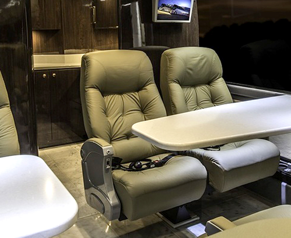
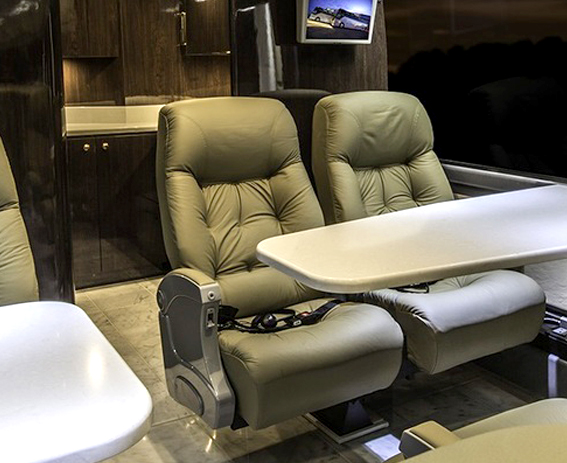

NUESTRA EMPRESA
Desde 1975 producimos en Argentina la más completa línea de asientos, cubriendo los distintos requerimientos del mercado. Somos la alternativa más confortable para el pasajero, la más beneficiosa para el transportista y la más segura para el carrocero. Los productos FAIC se diferencian por una exitosa aplicación del arte y la tecnología en su búsqueda de hacer cada vez más placentera la experiencia de viajar.
En FAIC creemos que el asiento marca la diferencia en la experiencia del pasajero. Por ello creamos asientos pensados para brindar confort y seguridad. La calidad del viaje es nuestra prioridad. Nuestro equipo está preparado para interpretar sus necesidades y brindar productos que superen sus expectativas. El cuidadoso diseño y elección de materiales aseguran el confort en la experiencia del viaje. Fabricados bajo las normas más exigentes, nuestros asientos garantizan la máxima durabilidad.

 
